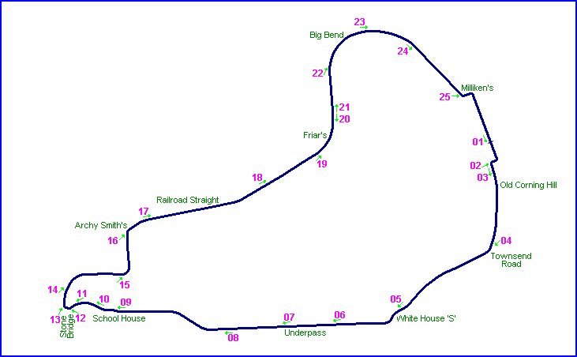
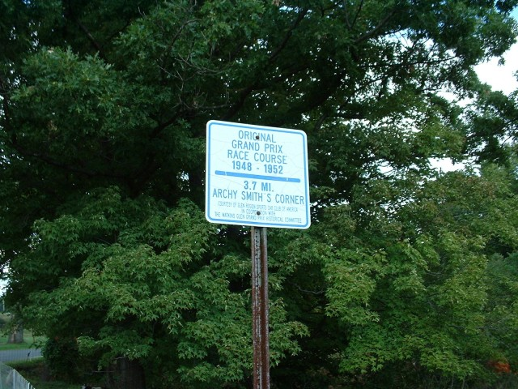
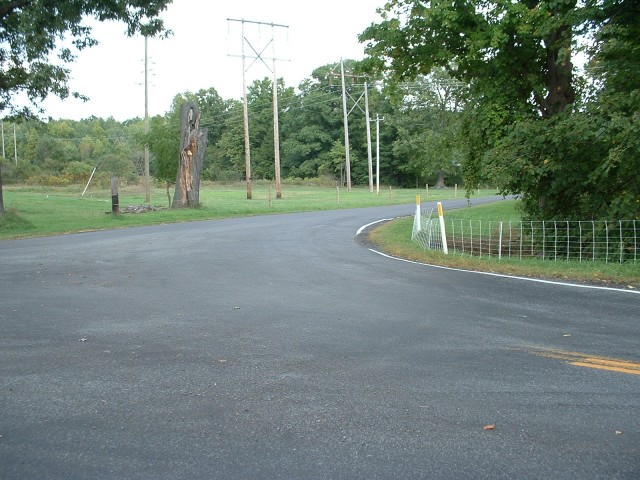
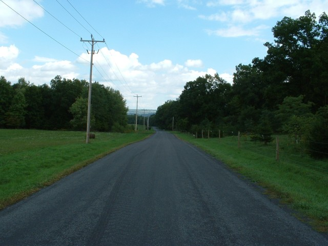
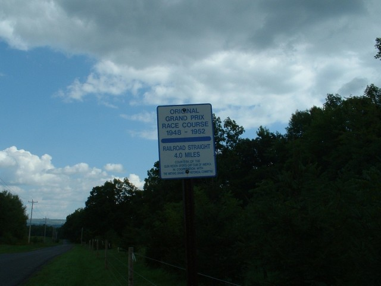
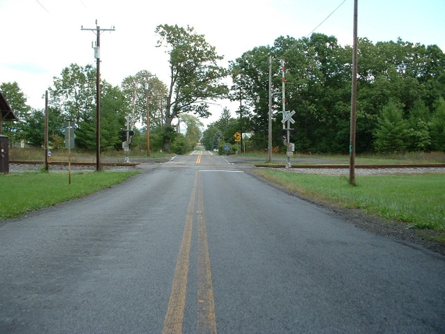
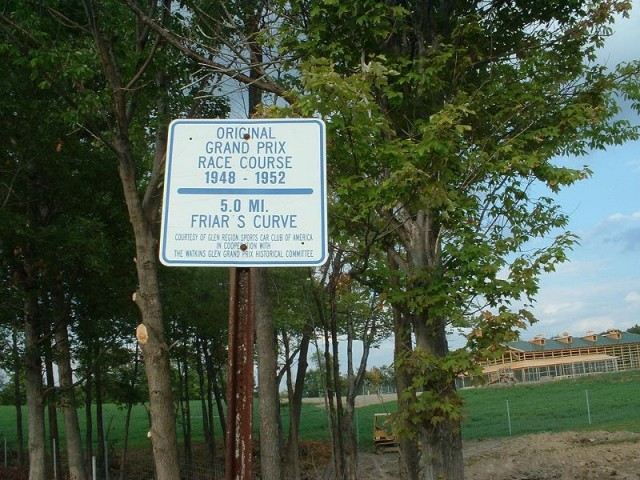
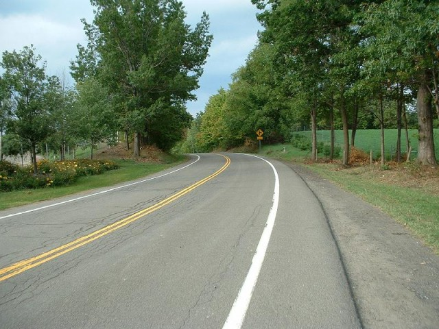
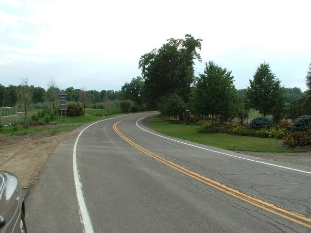

Watkins Glen - Archy Smith's, Railroad Straight & Friar's.
|| Contents || Start to Underpass | School House & Stone Bridge | Archy Smiths to Friars | Big Bend to Finish || Home ||

Numbers on the map represent the location where the photographs were taken. Click
links above to view the photographs.
Return to racingcircuits.net's Photo Archive Main Index

Archy Smith's Corner sign.

16 - Archy Smith's Corner.

17 - Railroad straight.

Railroad Straight sign.

18 - Railroad crossing.

Friar's Curve Road sign.

19 - Friar's.

20 - Looking back at Friar's.
| << PREVIOUS PAGE |
Photographs and Text ©Cullen Noonen. Reproduced here with kind permission.